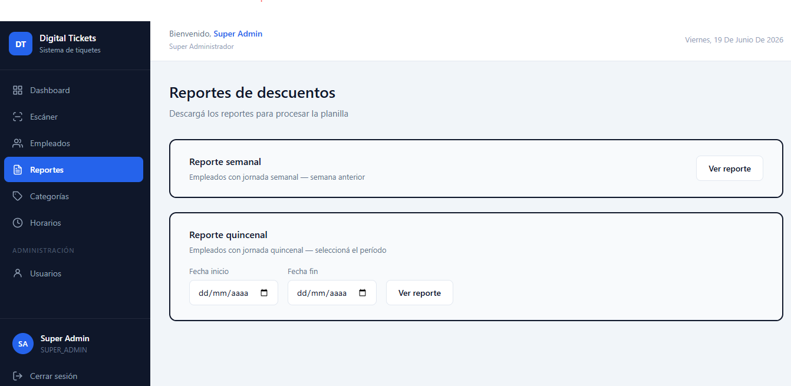
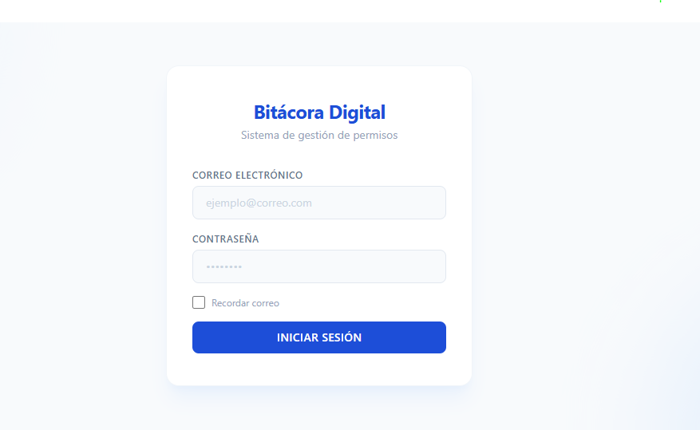

<!doctype html>
<html lang="en">
  <head>
    <meta charset="UTF-8" />
    <meta name="viewport" content="width=device-width, initial-scale=1.0" />
    <title>Leonardo Monge Personal WebSite/title>
    <meta property="og:title" content="Leonardo Monge · Software Engineer" />
    <meta property="og:description" content="Personal Web Site" />
    <meta
      property="og:image"
      content="https://leonardomonge.github.io/ResumeWebPage/img/portada.PNG?v=3"
    />
    <meta
      property="og:image:secure_url"
      content="https://leonardomonge.github.io/ResumeWebPage/img/portada.PNG?v=3"
    />
    <meta
      property="og:url"
      content="https://leonardomonge.github.io/ResumeWebPage/"
    />
    <meta property="og:image:type" content="image/png" />
    <meta property="og:image:width" content="1200" />
    <meta property="og:image:height" content="630" />

    <!-- Fuentes de Google -->
    <link rel="preconnect" href="https://fonts.googleapis.com" />
    <link rel="preconnect" href="https://fonts.gstatic.com" crossorigin />
    <link
      href="https://fonts.googleapis.com/css2?family=Inter:wght@400;500;600;700&family=DM+Mono:wght@400;500&display=swap"
      rel="stylesheet"
    />

    <!-- Íconos -->
    <link
      rel="stylesheet"
      href="https://cdnjs.cloudflare.com/ajax/libs/font-awesome/6.5.0/css/all.min.css"
    />

    <!-- Tu CSS -->
    <link rel="stylesheet" href="page.css" />
  </head>

  <body>
    <nav id="navbar">
      <div class="nav-container">
        <ul class="nav-links">
          <li><a href="#about" data-i18n="navAbout">About</a></li>
          <li><a href="#why" data-i18n="navWhy">Why me?</a></li>
          <li><a href="#projects" data-i18n="navProjects">Projects</a></li>
          <li>
            <a href="#experience" data-i18n="navExperience">Experience</a>
          </li>
          <li><a href="#education" data-i18n="navEducation">Education</a></li>
          <li><a href="#skills" data-i18n="navSkills">Skills</a></li>
          <li class="nav-contact-wrapper">
            <button class="lang-btn" onclick="toggleLang()" id="langBtn">
              ES
            </button>
            <button
              class="nav-contact"
              onclick="toggleDropdown()"
              data-i18n="contactBtn"
            >
              Contact me ▾
            </button>
            <div class="contact-dropdown" id="contactDropdown">
              <span class="dropdown-phone"
                ><i class="fas fa-phone"></i> (+506) 7261-2066</span
              >
              <a href="mailto:leonardomonge19@gmail.com"
                ><i class="fas fa-envelope"></i> leonardomonge19@gmail.com</a
              >
            </div>
          </li>
        </ul>
      </div>
    </nav>

    <main>
      <section id="about">
        <div class="about-container">
          <!-- Texto e links -->
          <div class="about-text">
            <h2 data-i18n="aboutTitle">
              Processes, Production, and Development Coordinator.
            </h2>
            <p class="about-desc" data-i18n="aboutDesc">
             Project coordinator with a background in Industrial Engineering and Systems Engineering. My experience in process supervision and my knowledge of
              software development allow me to focus on continuous improvement and the automation of any process. My goal is to optimize workflows, automate processes, 
              solve problems, and make a positive contribution both in my role and to the company.
            </p>
            <div class="about-links">
              <a href="https://github.com/leonardomonge" target="_blank"
                ><i class="fab fa-github"></i> GitHub</a
              >
              <a
                href="https://www.linkedin.com/in/leonardo-monge-2833251ba/"
                target="_blank"
                ><i class="fab fa-linkedin"></i> LinkedIn</a
              >
            </div>
          </div>

          <!-- Foto -->
          <div class="about-photo">
            
          </div>
        </div>
      </section>

      <section id="why">
        <h2 data-i18n="whyTitle">Why work with me?</h2>
        <div class="why-grid">
          <div class="why-card">
            <i class="fas fa-brain"></i>
            <h4 data-i18n="why1Title">Adaptability</h4>
            <p data-i18n="why1Desc">
              I believe my professional background allows me to work in different roles and apply my experience across a variety of responsibilities.
            </p>
          </div>

          <div class="why-card">
            <i class="fas fa-robot"></i>
            <h4 data-i18n="why2Title">Continuous updating</h4>
            <p data-i18n="why2Desc">
             Focused on learning new technologies and processes in a constantly changing and evolving market.
            </p>
          </div>

          <div class="why-card">
            <i class="fas fa-puzzle-piece"></i>
            <h4 data-i18n="why3Title">Problem Solver</h4>
            <p data-i18n="why3Desc">
              Problem solving skills, ability to work under pressure, multitasking, and meeting objectives
            </p>
          </div>

          <div class="why-card">
            <i class="fas fa-comments"></i>
            <h4 data-i18n="why4Title">Clear Communication</h4>
            <p data-i18n="why4Desc">
             8 years of experience working with teams, sharing information, and coordinating with different departments and management.
            </p>
          </div>

          <div class="why-card">
            <i class="fas fa-handshake"></i>
            <h4 data-i18n="why5Title">Committed</h4>
            <p data-i18n="why5Desc">
              I consider myself committed, responsible, Self taught., and always willing to learn.
            </p>
          </div>

          <div class="why-card">
            <i class="fas fa-rocket"></i>
            <h4 data-i18n="why6Title">Long Term Vision</h4>
            <p data-i18n="why6Desc">
              In a few years, I see myself as a professional leading projects,
              applying the most innovative technologies, and contributing to the
              companys development.
            </p>
          </div>
        </div>
      </section>


<!-- //Tiquetes Digitales -->
      <section id="projects">
        <h2 data-i18n="projectsTitle">Professional Projects</h2>
        <div class="project-card">
          <h3 data-i18n="dtTitle">Digital Tickets</h3>
         <p class="project1-desc2" data-i18n="dtDesc2">
            Identified a manual process that needed automation. Breakfast and lunch purchases were recorded manually, causing delays and making information difficult to access.
            A web application was developed using an employee ID card and scanner to record each purchase. The system automatically stores the information and adds each purchase to the employee's account.
            This solution made the process faster, improved record accuracy, and allowed the staff involved to access and review information more easily.
          </p>
          <div class="project-screenshots">
            
          </div>
          <li data-i18n="dtLi1">
              This application uses PostgreSQL as database and employs JWT based authentication for role based access control (RBAC). 
              Test automation was implemented using Jest, and the application was deployed to the cloud via Microsoft Azure, 
              utilizing CI/CD pipelines and GitHub Actions.
          </li>
          <div class="project-links"></div>
          <div class="project-tags">
            <span>React</span>
            <span>Typescript</span>
            <span>PostgreSQL</span>
            <span>NestJS</span>
            <span>Microsoft Azure</span>
            <span>Docker</span>
            <span>GitHub Actions</span>
            <span>Jest</span>
          </div>
        </div>


<!-- //Bitacora Digital -->
        <div class="project-card">
          <h3 data-i18n="lbTitle">Digital logBook</h3>
              <p class="project1-desc2" data-i18n="lbDesc2">
            ### Employee Leave & Permission Management System
We identified a slow, manual process for reviewing employee requests, including vacations, medical leave, days off, and other permissions. The information was not centralized, making it difficult to review requests and causing delays across several departments.
We developed a web application where each supervisor can submit requests for their employees and attach the required documents. The requests are then reviewed by Human Resources and Management.
This automation made the process faster for supervisors, centralized employee information, and simplified the review process for everyone involved.
          </p>
          <div class="project-screenshots">
            
          </div>

            <li data-i18n="lbLi1">
              **Technologies & Implementation**
Implemented JWT authentication and Role Based Access Control (RBAC) to manage user access and permissions. Developed RESTful APIs to manage employee 
requests and implemented automated testing using Jest and Selenium. The application was initially deployed on Railway and later migrated to Microsoft Azure.
            </li>
          <div class="project-links">
            <a href="" target="_blank"><i class="fab fa-youtube"></i> Demo</a>
          </div>
          <div class="project-tags">
            <span>React</span>
            <span>PostgreSQL</span>
            <span>NestJS</span>
            <span>Typescript</span>
            <span>Postman</span>
            <span>Vite</span>
            <span>Cloudinary</span>
            <span>Tailwind</span>
            <span>Railway</span>
            <span>Selenium</span>
          </div>
        </div>


<!-- //Proyecto Vantek Systems -->
        <div class="project-card">
          <h3 data-i18n="pkTitle">
            Vantek Systems — Freelance Collaborator (2026 – Present)
          </h3>
          <p data-i18n="pkDesc">
            Contributed to the development and maintenance of business web
            applications by implementing new modules, feature enhancements, bug
            fixes, and code optimizations.
          </p>

          <div class="project-tags">
            <span>JavaScript</span>
            <span>Angular</span>
            <span>Microsoft Azure</span>
            <span>Tailwind</span>
          </div>
        </div>
      </section>

      <section id="experience">
        <h2 data-i18n="experienceTitle">Experience</h2>
        <div class="exp-item">
          <h3 data-i18n="fsdRole">Production / Administrative Coordinator</h3>
          <p class="exp-meta" data-i18n="fsdMeta">
            Grupo Dipo · 2022 — Present
          </p>
          <ul>
            <li data-i18n="fsdLi1">
              Coordinating daily operations and manufacturing activities to meet objectives, support communication between
departments, and ensure proper process documentation.
            </li>
            <li data-i18n="fsdLi2">
              Collecting and analyzing information to prepare reports, monitor performance indicators, and support decision making in
the Cost, Logistics, and Management departments
            </li>
            <li data-i18n="fsdLi3">
              Following up on quotations and invoices with different departments, reviewing budgets and costs, and negotiating with
suppliers.
            </li>
 <li data-i18n="fsdLi4">
   Identifying process inefficiencies and helping implement digital solutions to improve internal workflows.
            </li>
          </ul>
        </div>

        <div class="exp-item">
          <h3 data-i18n="aaAltecoRole">Project Supervisor / Administrative</h3>
          <p class="exp-meta" data-i18n="aaAltecoMeta">
            Alteco S.A· 2017 — 2022
          </p>
          <ul>
            <li data-i18n="aaAltecoLi1">
             Coordinating projects from start to finish, including planning, scheduling, execution, and after-sales service.
            </li>
            <li data-i18n="aaAltecoLi2">
              Working with clients, suppliers, logistics, and internal teams to keep projects on schedule and ensure on time delivery.
            </li>
 <li data-i18n="aaAltecoLi3">
          Preparing and maintaining project documents, including contracts, quotations, invoices, budgets, and expense reports,
while communicating with management and other departments.
            </li>
 <li data-i18n="aaAltecoLi4">
           Supporting invoicing activities by preparing payment and project progress reports.
            </li>
 <li data-i18n="aaAltecoLi5">
            Reviewing projects and analyzing data to identify risks, delays, and operational issues, helping improve decision making and
future projects
            </li>
          </ul>
        </div>
      </section>

      <section id="education">
        <h2 data-i18n="educationTitle">Education</h2>

        <div class="edu-item">
          <h3 data-i18n="edu1Title">Fidelitas University</h3>
          <p class="edu-meta" data-i18n="edu1Meta">2021 — Present</p>
          <ul>
            <li data-i18n="edu1Item1">Systems Engineering (in progress)</li>
            <li data-i18n="edu1Item2">
              Industrial Engineering Studies 2017-2021
            </li>
          </ul>
        </div>

        <div class="edu-item">
          <h3 data-i18n="edu2Title">DEVLIVE ACADEMY (Software Development)</h3>
          <p class="edu-meta" data-i18n="edu2Meta">
            January 2025 — December 2025
          </p>
          <p class="edu-intro" data-i18n="edu2Intro">
            Full stack software development course, comprehensive training
            focused on agile methodologies and OOP. Centered on web application
            development, covering: frontend, backend, networking, testing, and
            cloud services.
          </p>
        </div>

        <div class="edu-item">
          <h3 data-i18n="edu3Title">Web Development Course</h3>
          <p class="edu-meta" data-i18n="edu3Meta">2024</p>
          <p class="edu-intro" data-i18n="edu3Intro">
            Personalized course in HTML, CSS and basic Javascript, learning
            basic and necessary concepts for understanding the languages
          </p>
        </div>

        <div class="edu-item">
          <h3 data-i18n="edu4Title">Universidad Juan Pablo II</h3>
          <p class="edu-meta" data-i18n="edu4Meta">English B1–B2 Certificate</p>
        </div>
      </section>

      <section id="skills">
        <h2 data-i18n="skillsTitle">Skills</h2>
        <div class="skills-grid">
          <div class="skill-group">
            <h4 data-i18n="skillLang">Languages</h4>
            <ul>
              <li>-JavaScript</li>
              <li>-Java</li>
              <li>-HTML5</li>
              <li>-CSS</li>
              <li>-TypeScript</li>
            </ul>
          </div>
          <div class="skill-group">
            <h4 data-i18n="skillFrameworks">Frameworks</h4>
            <ul>
              <li>-React</li>
              <li>-Node.js</li>
              <li>-NestJS</li>
              <li>-Tailwind CSS</li>
              <li>-PrismaORM</li>
              <li>-Jest,SuperTest,Selenium</li>
            </ul>
          </div>
          <div class="skill-group">
            <h4 data-i18n="skillDB">Databases</h4>
            <ul>
              <li>-PostgreSQL</li>
            </ul>
          </div>
          <div class="skill-group">
            <h4 data-i18n="skillCloud">Cloud & DevOps</h4>
            <ul>
              <li>-Microsoft Azure</li>
              <li>-Docker</li>
              <li>-GitHub Actions</li>
              <li>-Railway</li>
            </ul>
          </div>
          <div class="skill-group">
            <h4 data-i18n="skillTools">Tools</h4>
            <ul>
              <li>-Git & GitHub</li>
              <li>-Postman</li>
              <li>-JIRA</li>
              <li>-VSCode</li>
              <li>-Azure CLI</li>
              <li>-Vite</li>
              <li>-Prompt engineering for development (Claude ai)</li>
            </ul>
          </div>
          <div class="skill-group">
            <h4 data-i18n="skillTools">Others</h4>
            <ul>
              <li>-Agile/Scrum</li>
              <li>-Softland ERP</li>
              <li>-Excel</li>
              <li>-AutoCAD</li>
            </ul>
          </div>
        </div>
      </section>
    </main>

    <footer>
      <p data-i18n="footer">© 2026 Leonardo Monge · Costa Rica</p>
    </footer>

    <script src="translations.js"></script>
    <script src="page.js"></script>
  </body>
</html>
